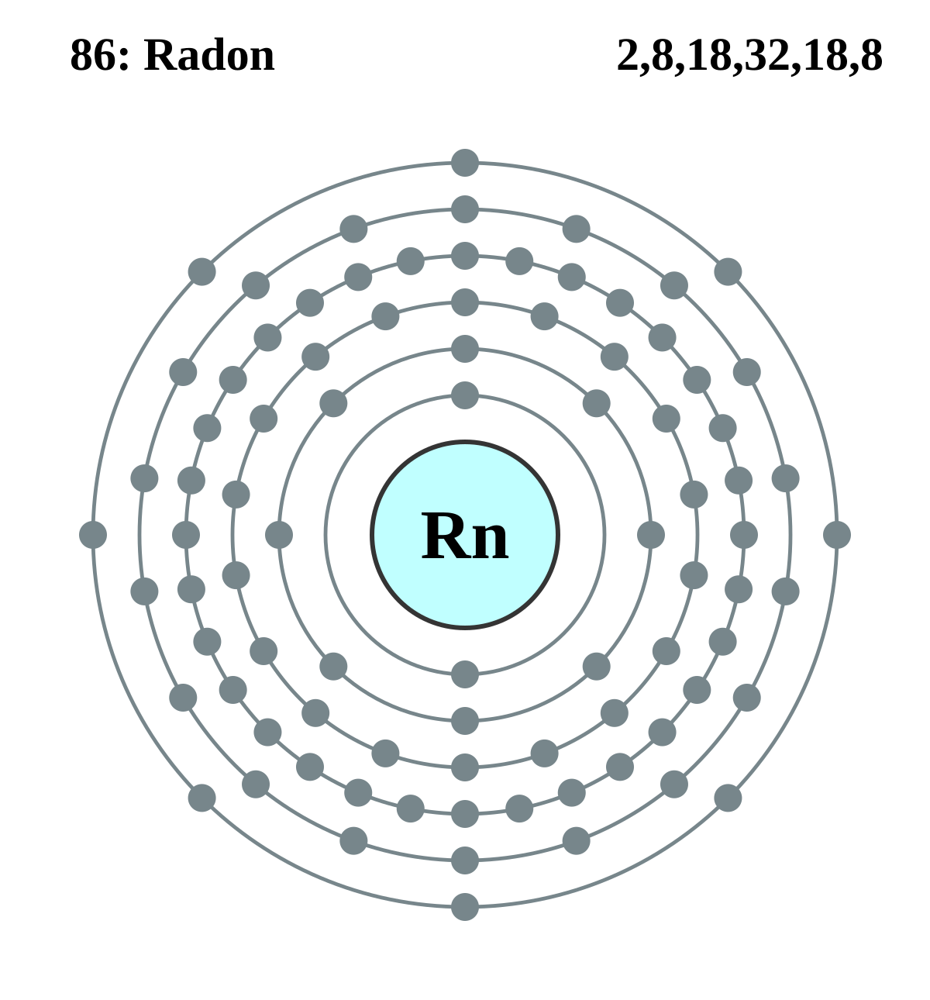
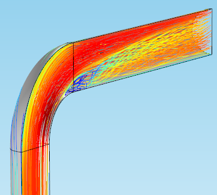

Radon–Seismic ML Correlation
Led a deep learning analysis of radon particle measurements to find correlations with seismic events. The project included data preprocessing, time-series anomaly detection (Prophet), and statistical validation.
PythonTensorFlowScikit-learnTime-series
Details and report summary available upon request.

Seawater Desalination — CFD & COMSOL
CFD and multiphysics simulations of seawater desalination processes. Includes flow regime analysis, parametric sweeps, and comparative performance modelling.
SimFlowCOMSOLNumerical Modeling
Details and report summary available upon request.